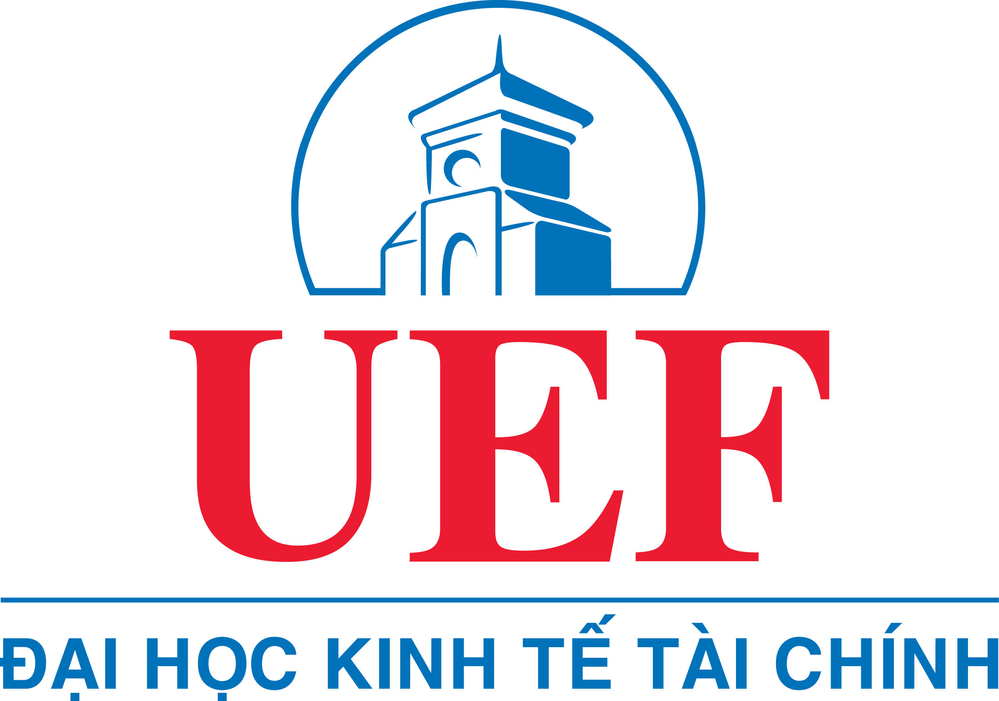

HỘI THẢO KHOA HỌC
KHOA CÔNG NGHỆ THÔNG TIN
BAN BIÊN TẬP
TS. Nguyễn Hà Giang – Trưởng Khoa CNTT
ThS. Văn Thị Thiên Trang – Phó Trưởng Khoa CNTT
ThS. Nguyễn Minh Tuấn – Phó Trưởng Khoa CNTT
TS. Huỳnh Đệ Thủ – Giảng viên Khoa CNTT
THƯ KÝ
CN. Nguyễn Minh Thắng - Giảng viên Khoa CNTT
ĐỂ XEM NỘI DUNG CÁC BÀI BÀO, VUI LÒNG QUÉT MÃ

© 2021 KHOA CÔNG NGHỆ THÔNG TIN